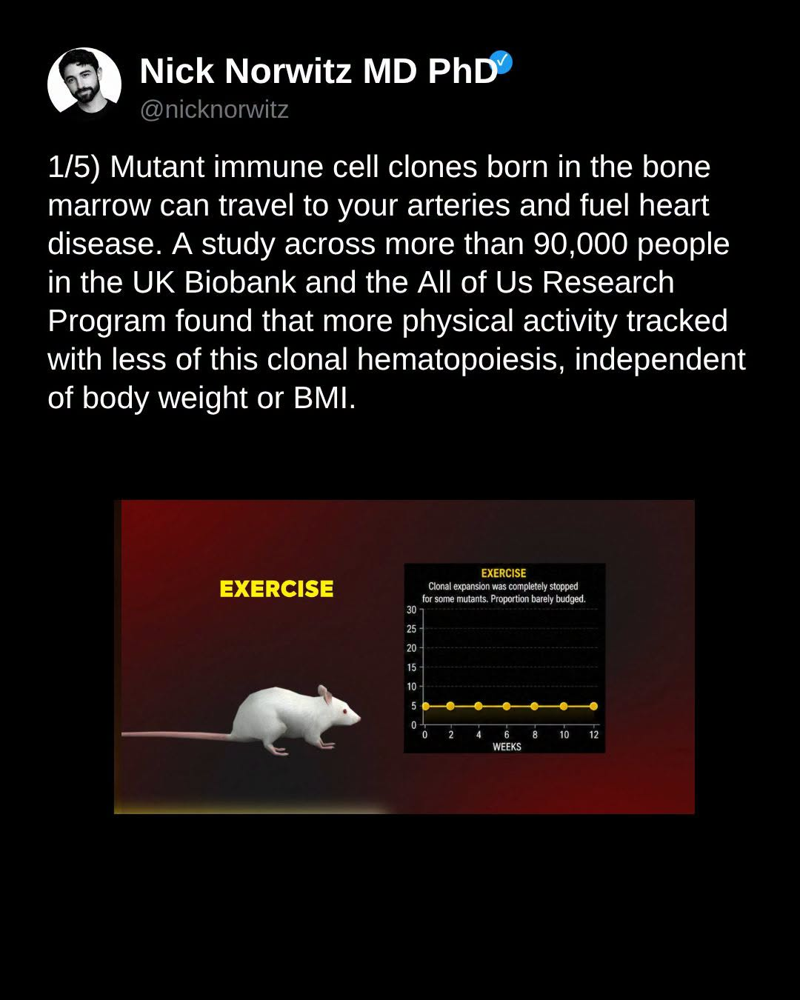
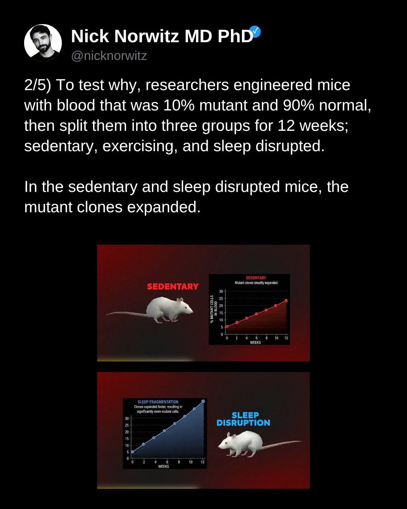
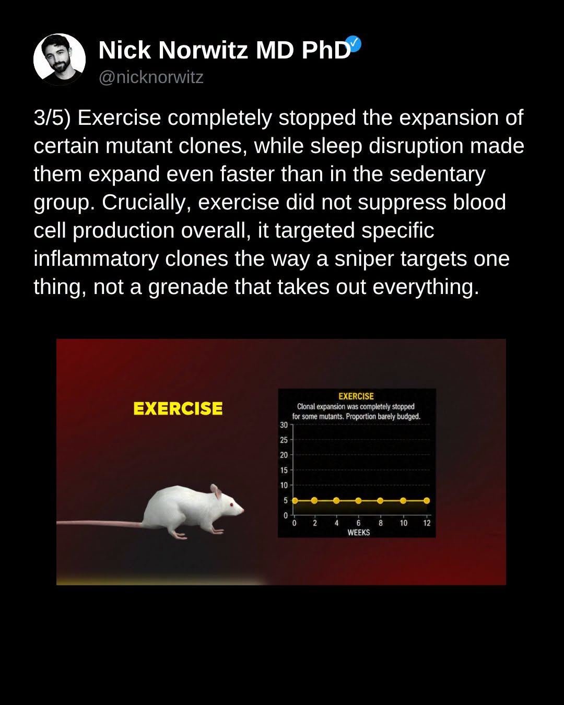
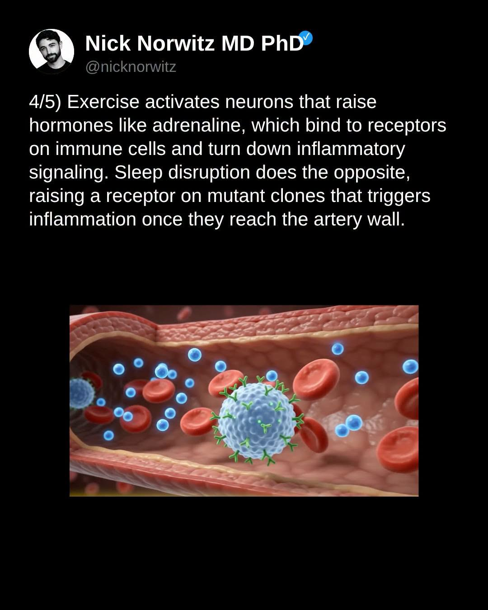

What can you actually do about clonal hematopoiesis, as a risk factor for heart disease?
Exercise and sleep are associated with lower risk. Both work in animal models.
The poster asks what can be done about clonal hematopoiesis as a heart disease risk factor and notes that exercise and sleep are associated with lower risk and work in animal models. The shared video mentions a 90,000-person study of what exercise does to the blood.
What can you actually do about clonal hematopoiesis, as a risk factor for heart disease?
Exercise and sleep are associated with lower risk. Both work in animal models.
A 90,000 person study found something your workout is doing to your blood 🩸 #nicknorwitz #exercisescience #inflammation #staycurious




A short video explanation of how mutant blood cells in bone marrow, clonal hematopoiesis, contribute to heart disease and cancer. The poster adds that sleep and exercise may reduce the risk.

The poster explains that clonal hematopoiesis, in which mutated blood stem cell clones expand in bone marrow, is a heart disease risk factor that becomes likely with advancing age, appears earlier in some people through genetics or chance, and a minority avoid. A shared video describes how these cells can fuel atherosclerosis.
The poster argues it is unlikely high B12 intake causes cancer or clonal disease. The Physicians' Health Study multivitamin trial, which contained 10 times the RDA of B12, found no increase in major disease over 14 years and an 8% lower overall cancer risk. Nurses' and Physicians' cohorts also found no B12-disease link, except combined B12 and B6 with hip fracture, which vanished for B12 alone.
In the small phase 2 EVITA randomized trial of oral vitamin C in clonal cytopenia and lower-risk myeloid cancers, the vitamin C group had 65% lower risk of death (11 vs 24 deaths) and fewer serious adverse events. Survival was exploratory and the primary endpoint of clonal growth showed no difference. The poster speculates relevance to CHIP and cardiovascular disease but calls it a big unproven leap.

Louis agrees with a critique of influencers who treat VO2 max as the key heart-health metric. VO2 max is oxygen consumption divided by body weight, so it can rise through weight loss without real fitness gain. He also notes AHA and ACC statements recognizing high-volume intense exercise can have downsides.

Louis shares University of Pittsburgh MRI findings in 40 high-level recreational athletes aged 40-81 training 4-5 times per week. Muscle density and strength held steady with consistent activity, suggesting much age-related decline is due to inactivity. Sedentary adults may lose up to 8% of muscle per decade after 40.